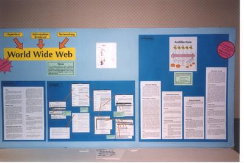
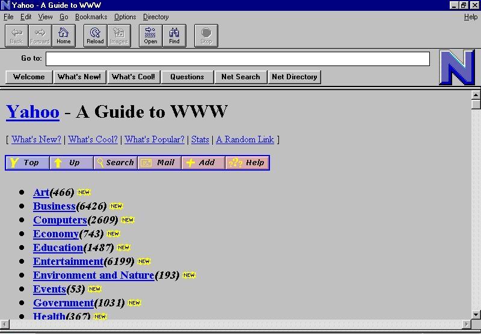
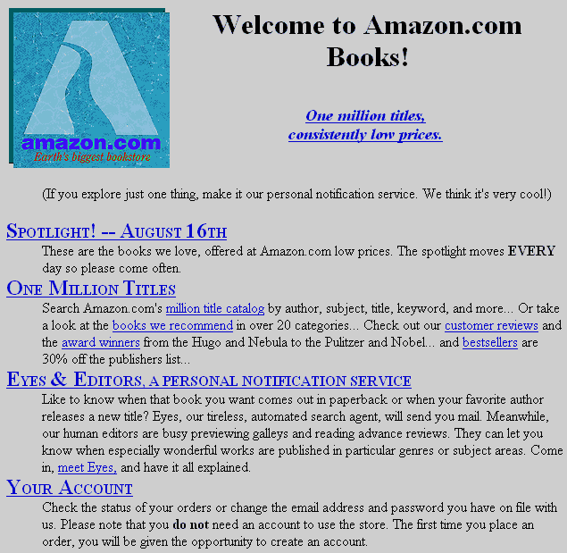
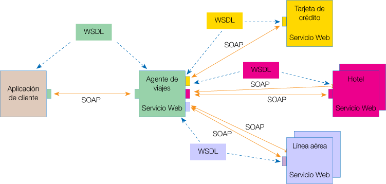
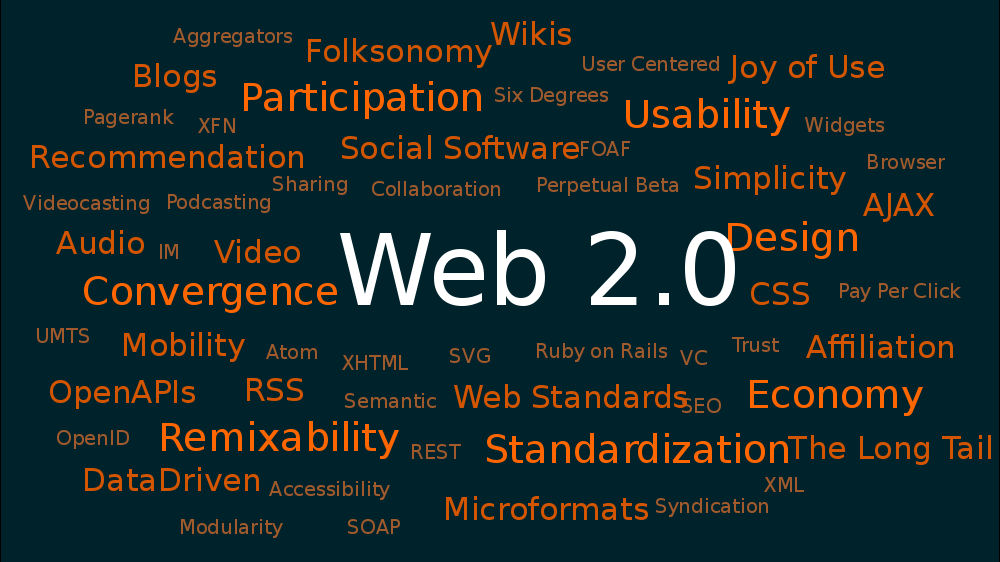
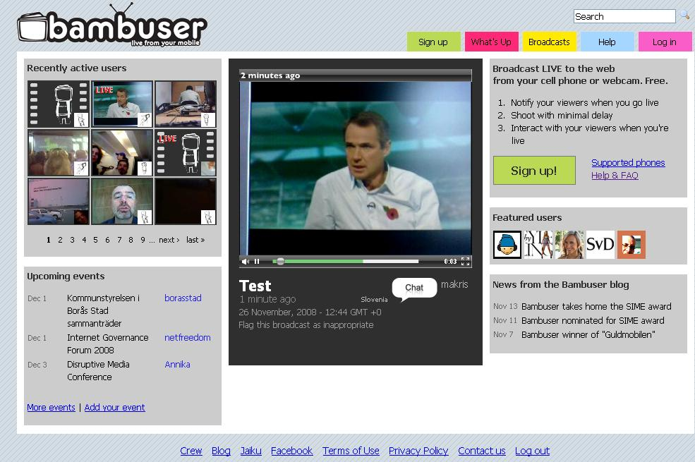
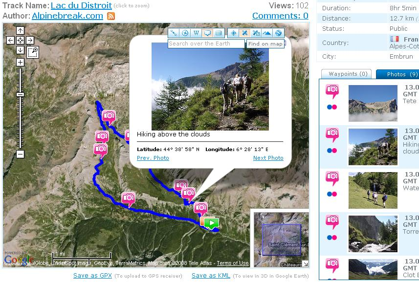
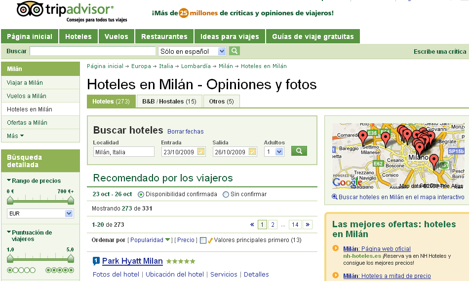
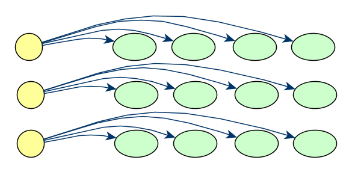
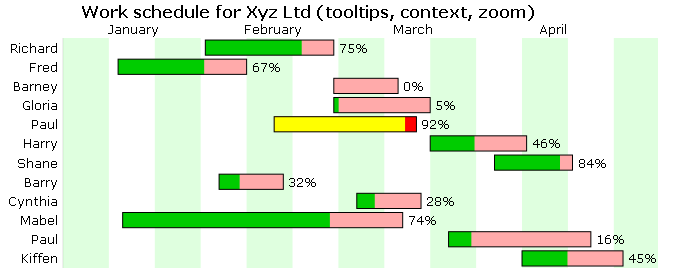

Aplicaciones Web: orden en el caos
CPR Oviedo
Oviedo, 15 Mar 2010
World Wide Web Consortium
Historia de la Web

Prehistoria de la Web: Vannevar Bush
- Consejero científico de Roosevelt
- Publicó "As We May Think" (julio 1945)
- Concepto de máquina (Memex) que almacenaba gran cantidad de información enlazada
Prehistoria de la Web: Douglas Engelbart
- Inventor del ratón
- Inspirado por "As We May Think"
- Líder del trabajo sobre hipertexto
Prehistoria de la Web: Ted Nelson
- Acuñó el término hipertexto (1965)
- Proyecto Xanadu (1960)
- Red con un interfaz de usuario sencillo
- Base de datos de documentos basados en hipertexto
Nacimiento de la Web: CERN
Un Espacio de Información Global
Suppose all the information stored on computers everywhere were linked, I thought.
Suppose I could program my computer to create a space in which anything could be linked to anything.
All the bits of information in every computer at CERN, and on the planet, would be available to me and to anyone else.
There would be a single, global information space.
Tim Berners-Lee, Weaving the Web
Hypertext'91 (sólo un póster)

Hypertext '91 Conference, San Antonio, Texas (EEUU)
Versión simple del HTML
- Simplicidad del HTML
- Direccionamiento basado en HTTP y URLs
<a href="http://example.com/libro/capitulo1/"
rel="includes">Capítulo 1</a>
- Pensado para que cualquiera lo pudiese utilizar
- Se va enriqueciendo...
Evolución de los Navegadores (1993+)
- Midas, Erwise, Viola y Lynx
- NCSA lanza la primera versión Mosaic para X Windows
- ...
La Web de por entonces... (Web 1.0)

Web 1.0
NCSA Mosaic pasó a ser Netscape
Una Web para navegar
- HTTP + URL + HTML
- Ancho de banda limitado
- Dispositivos limitados (de escritorio)
- No era posible la interacción con el documento
- Experiencia de usuario “pasiva”
Nacimiento del W3C (1994)
Árbitro para conseguir consenso
Recomendaciones
- PNG (1996)
- HTML 3.2 (1997)
- Desde entonces... “Guiando la Web a su máximo potencial”
Base del comercio electrónico (1995)

Comienza el fenómeno “blog” (1999)
Servicios Web (2002)
- W3C crea la Actividad de Servicios Web
- Interoperabilidad entre máquinas (fenómeno XML)

Web 2.0 (2004 ... hoy)

Web 2.0
Una web para navegar interactuar
- HTTP + URL + HTML + CSS + Javascript + ... + Flash
- Mayor ancho de banda y mejores dispositivos
- Más dispositivos (teléfonos, PDAs, ordenadores portátiles,...)
Experiencia de usuario “interactiva”
(blogs, wikis, tweets, vídeos, fotos...)
La Web de los Creadores y Consumidores
Web 2.0
Surgen retos: una Web de confianza
Promover
- ...confianza
- ...responsabilidad
- ...seguridad
- ...confidencialidad
Entorno colaborativo
- Privacidad (P3P)
- Seguridad XML
Desde cualquier lugar, cualquier dispositivo
...desde cualquier dispositivo


La estandarización es importante
Limitaciones de los dispositivos móviles

(SVG Population Pyramid on iPhone)
- Debe tenerse en cuenta:
- Pantalla reducida
- Coste del tráfico de datos
- Tiempo limitado del usuario
- El diseño debe adecuarse a un contexto
- Sitios Web Móviles (Pautas)
- Adecuación al dispositivo (DDR)
- Geolocalización
Nuevas Aplicaciones Web (Ubícuas)


La Web Tradicional, para humanos
- Representa la información usando
- lenguaje natural (español, inglés, chino,...),
- gráficos, multimedia, diseños de las páginas
- Los humanos podemos procesar esta información (fácilmente)
- Deducimos hechos desde información parcial
- Creamos asociaciones mentales
- Asimilamos información desde distintos sentidos
- aunque, existen personas con ciertas limitaciones
- Ejemplo...
Deseamos organizar un viaje a Milán...

...seleccionamos la aerolínea italiana

...la de bajo coste

...o con ayuda de un buscador

Buscamos alojamiento... barato

... o a través de una agencia (italiana)

... o algo de confianza

¿Y si nuestro viaje no se acaba ahí?
Integración de la información
- Hemos buscado
- Diversa información,
- en distintas fuentes,
- desde diferentes servicios,
- con representación distinta (distintos formatos),
- incluso, en distintos idiomas
- Podemos integrar esta información
- Proceso tedioso y dependiente de nuestra pericia
- Muchos otros casos cotidianos...
Ciencias de la Salud

Redes Sociales

- Omnipresentes en estos días
- LinkedIn, eConozco, Friendster, Facebook,...
- Los datos no son intercambiables
- ¿Cuántas veces has tenido que introducir los contactos?
- Las aplicaciones deberían poder intercambiar los datos de una forma estándar
Integración de Bases de Datos
- Las BBDD son diferentes en estructura y en contenidos
- Muchas aplicaciones necesitan manejar varias BBDD
- Tras la fusión de compañías
- Combinación de información administrativa (e-Government)
- Investigación bioquímica, genética, farmacéutica
- ...
- El caso es que la mayoría de estos datos están en la Web
- (aunque no necesariamente públicos)
Objetivo: La Web de los Datos
Usar los datos en la Web de la misma forma que los documentos:
- Enlazar los datos entre sí
- Usar los datos como queramos (visualizarlos, combinarlos, etc)
- Cualquier aplicación debería poder interpretar cada parte del dato
¡Interoperabilidad!
¿Esto no es lo que ya hacen los "mashups"?...
... en parte, sí (Interoperabilidad ad-hoc)
- Explotan la potencia de la Web de Datos
- Pero están forzados a buscar soluciones ad-hoc
- Servicios Web exponiendo los datos
- Distintas APIs, distinta estructura
- No se usa una forma estándar para acceder a los datos
La "Web de Datos" se debería comportar como la "Web de los Documentos"
...de una forma estándar
Pero... las máquinas son ignorantes
- La información parcial es inútil
- Hacer que ciertos recursos tengan sentido es difícil (multimedia)
- Describir analogías automáticamente es difícil
- La combinación de información automáticamente es difícil
- ¿Es igual
<b1:creator>, que <b2:author>, o que <b3:autor>?
- ¿Cómo combinar distintos niveles jerárquicos del XML?
Evolución de la Web Tradicional...
- Los humanos podemos entenderlo (más o menos)

... a la Web Semántica
- Lo entendemos nosotros y las máquinas

¿Cómo funciona esto?
- Se aplica el potencial de las URIs a conceptos
- Modelado de las cosas reales (conceptos y sus relaciones)
- no documentos ni tablas de las bases de datos
- Se enlazan los datos entre sí
- Se exponen
Modelado estándar de los datos
- Hacer accesible lo que quieras ...
- ... dentro de una organización o entre varias ...
- ... en la Web
Las Bases de Datos clásicas

El elemento de la Web Semántica

- Simplicidad y consistencia matemática
- Resource Description Framework (RDF)
- RDF -> Datos
- HTML -> Documentos
- Se puede codificar en XML
La Web Semántica incluye tablas,...

... cualquier cosa

Materializando la Web Semántica

- Mecanismos específicos para las máquinas:
- Evita la ambigüedad en la identificación (
URI)
- Describir los recursos (RDF)
- Modelar ontologías (OWL)
- Realizar búsquedas (SPARQL)
- Expresar reglas y su intercambio (RIF)
- establecer lógica, comprobaciones, certificados de confianza, etc.
Evitar el aislamiento

Proyecto LinkingOpenData
- Objetivo:
- Exponer conjuntos de datos (RDF)
- Enlazar distintos conjuntos de datos
- Posiblemente establecer puntos de consulta (SPARQL)
- Miles de millones de tripletas, cientos de millones de enlaces...
- La base para la Web de Datos
Nube de Linked Open Data (marzo 2008)

Nube de Linked Open Data (septiembre 2008)

Nube de Linked Open Data (julio 2009)

Pero... ¿todo esto funciona?
¡Sí!
Búsqueda inteligente para servicios online

Mejora de las búsquedas (BOPA)

Integración de conocimiento de Medicina China

- Sobre 80 bases de datos, con 200.000 registros en cada una
- Usa una capa semántica
Hacia la Web x.0
- Una Web de Datos
- Una Web de Interacción
Mejorando la interacción en la Web
Modelando la interfaz de usuario
- Mejorando el lenguaje de primera generación, HTML
- Integrando las tecnologías de segunda generación:
- CSS (estilos atractivos)
- SVG (gráficos interactivos)
- MathML (representaciones matemáticas)
- Vídeo, Canvas, Geolocalización, ...
Historia del HTML5
- HTML4, XHTML1, (XHTML2)...
- 2009, finaliza Grupo de Trabajo de XHTML
- Todos los esfuerzos sobre HTML5
HTML5: ¿HTML o XML?
- Se permite:
- HTML (
text/html) y
- XML (
application/xhtml+xml)
- Incorpora
- SVG y MathML
- DOM Core y DOM HTML
Datos en los Documentos HTML5
Representación e integración de datos en la Web
<div itemscope>
<p>Nombre: <span itemprop="name">Amanda</span></p>
<p>Banda:
<span itemprop="band" itemscope>
<span itemprop="name">Los Grandes del Jazz</span>
(<span itemprop="size">12</span> integrantes)
</span>
</p>
</div>
<p typeof="foaf:Person" xmlns:foaf="http://xmlns.com/foaf/0.1/">
Mi nombre es <em property="foaf:name">Alice</em> y...
</p>
HTML5+RDFa, no sólo presentación

Lo que ven los navegadores (izquierda) y lo que ven los humanos (derecha)
HTML5+RDFa. Ahora el navegador sí lo entiende

HTML5 <video>
<video src='myMovie' id='vid' />
var vid = document.getElementById("vid");
vid.play();
vid.pause();
vid.currentTime = 0;
Párrafo en HTML sobre el vídeo
La opacidad de CSS permite al vídeo ser transparente parcialmente.
Pasa el ratón por encima de vid.play() para controlar (arrancar/pausar/detener) el vídeo [http://www.polycrystal.org/lego/movies.html].
HTML5 + CSS3 + SVG + MathML
Ejemplos (Philippe Le Hégaret):
HTML5 <canvas>
// canvas es una referencia a un elemento de tipo <canvas>
var context = canvas.getContext('2d');
context.fillRect(0,0,50,50);
canvas.setAttribute('width', '300'); // limpia el canvas
context.fillRect(100,0,50,50); // sólo permanece éste ...
// ... rectángulo

Ejemplos: Canvas Painter, Canvas and Audio
Widgets
- Basados en estándares (HTML + CSS + Javascript)
Geolocation API

http://www.w3.org/TR/geolocation-API
function showMap(position) {
// Muestra un mapa centrado en:
// - position.coords.latitude
// - position.coords.longitude
}
// Petición de posicionamiento
navigator.geolocation.getCurrentPosition(showMap);
APIs y Política de Dispositivos
http://www.w3.org/2009/dap
- Cámara
- Contactos
- Mensajería
- Calendario
- ...
No está restringido a dispositivos móviles
Muchas más piezas
- HTML 5
- CSS 2.1
- CSS 3 Selectors
- CSS 3 Media Queries
- CSS 3 Text
- CSS 3 Backgrounds and Borders
- CSS 3 Colors
- CSS 3 2D Transformations
- CSS 3 3D Transformations
- CSS 3 Transitions
- CSS 3 Animations
- CSS 3 Multi-Columns
- CSS Namespaces
- SVG 1.1
- WAI-ARIA 1.0
- MathML 2.0
- ECMAScript 5
- 2D Context
- WebGL
- Web Storage
- Indexed Database
- Web Workers
- Web Sockets Protocol/API
- Geolocation
- Server-Sent Events
- Element Traversal
- DOM Level 3 Events
- Media Fragments
- XMLHttpRequest
- Selectors API
- CSSOM View Module
- Cross-Origin Resource Sharing
- File API
- RDFa
- Microdata
- WOFF
- HTTP 1.1 part 1 to part 7
- TLS 1.2 (updated)
- IRI (updated)
- …
Línea de tiempo de los estándares del W3C


{kind=link}
{kind=link}
{kind=link}